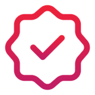

Cheat sheet · Scrum Master · 1/2
L'IA avant et après chaque événement
L'IA propose ; tu facilites, l'équipe décide.
 Parcours Scrum Masterà retenir, module par module
Parcours Scrum Masterà retenir, module par module
- Préparer la rétro : un format se choisit à partir de l'historique de l'équipe et des actions non suivies.
- Synthétiser la rétro : un regard neuf, des comptes justes, le post-it isolé reste. Les actions sont à l'équipe.
- Daily : on travaille le fonctionnement et l'obstacle qui revient, jamais une personne.
- Sprint Review : on ne montre comme terminé que ce qui remplit la DoD ; aucun retour perdu, aucune date promise.
- Conversation difficile : on répète avec l'IA, on écoute en vrai.
- Métriques et adoption : des hypothèses, pas des verdicts ; une expérimentation, pas une règle.
 Ce que fait vraiment un LLM
Ce que fait vraiment un LLM
- Il prédit le texte le plus plausible, pas le vrai : une citation du Scrum Guide peut être inventée.
- Il ne sait de ton équipe que ce que tu lui dis.
- Deux fois la même question, deux réponses : demande plusieurs options.
- Traite chaque réponse comme le travail d'un stagiaire brillant mais pressé.
Avant, pendant, après
| Événement | Avant | Après |
|---|---|---|
| Planning | Sprint Goals, risques | Plan au propre |
| Daily | Questions de relance | Obstacles récurrents |
| Review | Déroulé, questions | Retours pour le PO |
| Rétro | Format adapté | Thèmes, actions |
Pendant l'événement, l'IA s'efface : la place est aux échanges de l'équipe.
 Équipe ton assistantexemple : Claude Desktop
Équipe ton assistantexemple : Claude Desktop
- Skill : un prompt qui sert à chaque sprint devient un dossier avec un
SKILL.md(name,description, instructions), importé dans Personnaliser › Skills. Claude le charge quand la tâche correspond. - MCP : le connecteur Atlassian (Personnaliser › Connecteurs) lit Jira avec tes droits. Demande la requête JQL utilisée, et « ne modifie aucun ticket ».
Ailleurs : GPT personnalisé, Gem, agent Copilot, connecteurs. Vérifie ce que ton entreprise autorise.
 Ce qui reste humain
Ce qui reste humain
- Toi : le format, la facilitation, la façon de dire.
- L'équipe : ses actions, son Sprint Goal, son Sprint Backlog, son accord sur l'IA.
- Le PO : le Product Backlog, son ordre, ce qu'un retour y devient.
- Et jamais d'IA pour évaluer une personne.

Une demande à l'IA est un brief- Rôle : « Tu es facilitateur agile, expérimenté en Scrum. »
- Contexte : quelques faits utiles, ils occupent la context window.
- Tâche : plusieurs options, avec leurs limites.
- Format : durée, tableau, longueur, ton.
- Règles : rien d'inventé, et ce que l'IA ne décide pas.